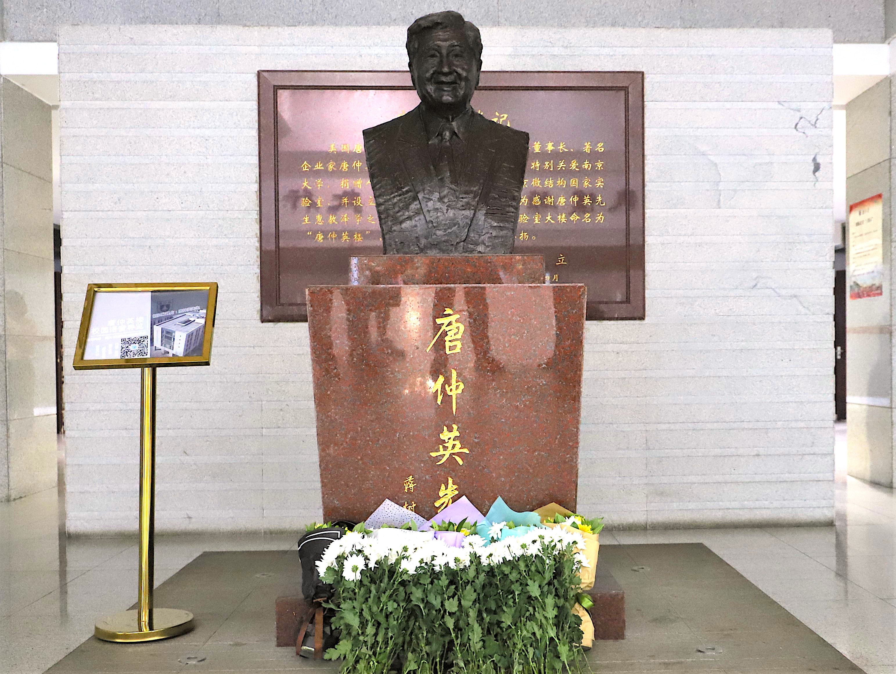

南京大学天健社
概况
南京大学天健社又名南京大学唐仲英爱心社，成立于2000年9月，直属南京大学学工处。最初成员为美籍华裔企业家唐仲英先生设立的“唐仲英德育奖学金”获得者，他们有感于唐氏的厚德，取“天行健，君子自强不息”之意，自发成立天健社。自成立以来，在唐仲英基金会的支持下，天健人始终怀着一颗感恩的心，本着“得诸社会，还诸社会”的理念，以”服务社会，奉献爱心，推己及人，薪火相传”为宗旨，积极投入公益活动中。社内现有社员150多名，志愿者700多名，社内活动丰富多彩，校园公益、社会服务、内部建设各个方面都有序开展。
组织架构
天健社设有全媒体中心、活动、财务、项目、人资、公关6个部门，以及由奖学金获得者组成的 “唐氏之家”。

- 全媒体中心负责社团所有活动线上线下各种形式的宣传和通讯稿的整理及图文资料的保存。
- 活动部主要负责活动策划和实施，重点是短期的创新型活动。
- 项目部主要负责运行社内已经成熟的精品项目并着力进行深度打磨，改进、完善已有项目。
- 人资部负责保证社团人力资源合理配置，以增强社团凝聚力、提高社团运行效率。
- 公关部对内促进社内各部门的沟通，对外联系校内外各爱心团体，探寻可以合作的项目。
- 财务部负责管理社团财务。
- 唐氏之家由每年“唐仲英德育奖学金”获得者组成。
唐仲英基金会
唐仲英（1930～2018），1930年出生于江苏省苏州市吴江区盛泽镇，1950年赴美求学创业。1960年开始建厂，并于1964年独资创建了第一家钢铁服务中心，即“国际物资公司”。到1980年，在美国已拥有30多家大小企业，大多跟钢铁业相关，建立起“唐氏工业集团”。1982年，收购美国著名的麦克罗斯钢铁厂，从而使唐氏工业集团跻身于年销售额逾10亿美元的私营企业行列，唐先生亦被誉为“钢铁大王”。

尽管商务缠身，唐先生仍不忘探索回馈社会之道。他认为，知识、健康和社会责任心是推动社会进步的三大要旨。为此，自1995年起，唐先生在美国先后创立了三个基金会：唐氏中药研究基金会、唐仲英基金会（中国）和唐仲英基金会（美国）。唐仲英基金会（中国）秉持“服务社会、奉献爱心、推己及人、薪火相传”的宗旨，自1996年开始在在中国高校设立“唐仲英德育奖学金”、在中学设立“唐仲英爱心奖学金”，通过各种公益活动提升青少年学生的民族责任感和社会责任心；资助高校科技发展、文化传承创新，资助医疗卫生项目，提升教育及医疗水平；开展农业援助，推广科教兴农示范，逐步改善农民生活。
唐仲英先生不仅是一位慈善家，同时也是一位教育家，他基于对高校实需求的深入了解以及对高等教育发展规律的准确把握，在过去的近二十年中屡次给予南京大学精准而有力的支持，持续助力着南京大学教育事业的稳步发展。多年来唐仲英基金会向南京大学捐赠累计近七千万元，助建南京大学固体微结构国家重点实验室，有力支持了南大基础设施、教学科研、师资队伍、学生培养等各项办学事业的开展。其中南京大学固体微结构国家重点实验室被美国科学情报研究所列为中国大陆实验室榜首。
图为南京大学鼓楼校区的唐仲英楼。
仲英青年学者
唐仲英基金会（中国）自2016年开始，设立“仲英青年学者”项目，资助合作高校中具有“博士”学位、年龄在38岁以下、热心公益事业且学校认为需要重点培养的人才。每位“仲英青年学者”资助时间为三年，每人每年12万元，资助期内青年学者要承诺以己之长身体力行的从事公益活动，并协助基金会推动公益事业的发展。南京大学是唐仲英基金会首批设立该项目的十所高校之一，首次遴选名额为10名。与南大以往的人才支持计划不同，“仲英青年学者”除了教学和科研能力外，对获选者提出了更高的道德品质和参加社会公益活动的要求。
“仲英青年学者”项目汇集了全国最优秀的一批青年学者。他们视野开阔、知识广博，富有活力与激情，让他们带领和指导学生等做好社会公益活动，特别是创新性公益活动，无论对年轻学者自身的全面发展和学生的成长成才，以及促进国家道德建设和社会公益事业发展，都具有深远的意义。

图为艺术研究院的丁珊珊老师在开办观影会。
“仲英青年学者”项目与南大天健社的结对共建是南京大学在师生合作、教学相长、项目联动上的一次有益尝试。仲英青年学者们为天健社学生勤工俭学搭建桥梁，为学生在学习、生活等方面提供指导与帮助；天健社社员在学者们的带领下开展专业公益讲座和培训（如电影艺术讲座、急救常识培训）。有了这些优秀青年导师的加盟、指导，以及学校相关部门的支持，天健社的公益活动更加丰富和精彩，辐射校内校外更多受益人群，向唐仲英先生，向唐氏基金会，向全社会交出一份合格的答卷。

图为医学院的王婷婷老师在带着天健社志愿者参与“智者生存”的医疗急救知识培训。